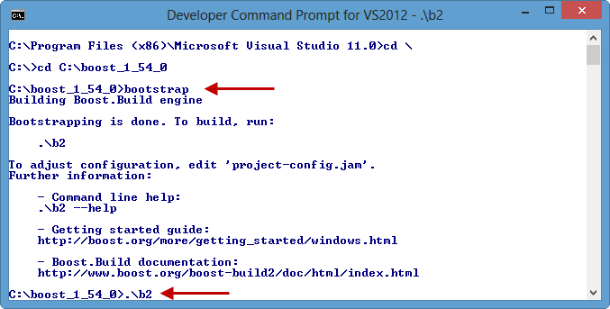
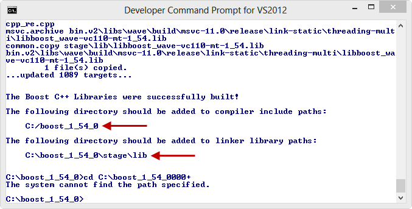
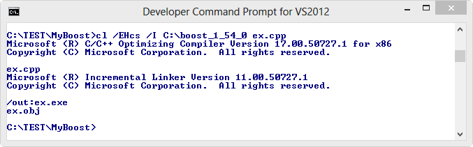

C++ Tutorial - Boost - 2017
Everything we need for introductory materials are at http://www.boost.org.
Boost is an organization and it offers portable, peer-reviewed, open source C++ libraries. Most C++ Standards Committee's Library Technical Report 1 (TR1) functionality is based on work done at Boost, and until vendors of compilers include TR1 in their C++ library distributions, the Boost web site will remain the first stop for developers looking for TR1 implementation.
Boost libraries range from general-purpose libraries like the smart_ptr library, to operating system abstractions like Boost FileSystem, to libraries primarily aimed at other library developers and advanced C++ users, like the template metaprogramming (mpl).
In order to ensure efficiency and flexibility, Boost makes extensive use of templates. Boost has been a source of extensive work and research into generic programming and metaprogramming in C++.
Here is a summary of what Boost brings to the table:
- Boost provides lots of useful facilities not available in STL.
- Boost provides alternatives to work around certain problems with STL's design or implementation.
- Boost does a good job of handling some of the very complicated problems, such as smart pointers.
- Documentation is usually excellent. Not only does the documentation explain what each library does and how to use it, but it also provides an excellent in-depth discussion of the design decisions, constraints, and requirements that went into constructing the library. So, reading the Boost documentation is a great way of learning about the principles of software design.
While Boost can serve as an excellent extension or alternative to many of STL's feature. But we should be aware of the following caveats:
- Most of the core Boost classes are templates, so all that one needs in order to use them is the appropriate set of header files. However, some of the Boost libraries built into rather large .lib files and may not be feasible for use in a very small project.
- Though the world-wide Boost community provides an excellent support, the Boost libraries come with no guarantees. If we encounter a bug, it will ultimately be our responsibility to work around it.
- Backward compatibility may not be supported.
- The Boost libraries are distributed under the Boost Software License.
The next section will show how we can start to use boost libraries using Windows environment. Since there are other good sites for introductory course, I'm not going into details here.
Download a source from Boost Downloads.
Open up Developer Command Prompt window -> Go to the boost directory.
Issue a command bootstrap, and then b2:

We need to setup include and link library path as indicated in the picture below:

Once installed, let's run our sample code.
Use the following file as our source file, "ex.cpp":
#include <boost/lambda/lambda.hpp>
#include <iostream>
#include <iterator>
#include <algorithm>
int main()
{
typedef std::istream_iterator<int> in;
std::cout << "Type in any number: ";
std::for_each(
in(std::cin), in(), std::cout
<< (boost::lambda::_1 * 10)
<< "\nType in another number: " );
}
Build and Run.
Type some numbers.
Type in any number: 10 100 Type in another number: 20 200 Type in another number:We got it!
This time, we're going to do it on command line:
All Programs > Microsoft Visual Studio 2012 >
Visual Studio Tools > Visual Studio 2012 Command Prompt
Then, run the following, we'll have "ex.exe"
In my case, the "ex.cpp" is in C:\TEST\MyBoost;
TR1 specifies new components and all are in the boost namespace. For example, the full name of the shared_ptr is:
boost::shared_ptr
Here is the list of the new components:
A smart pointer is an object that acts like a pointer for most intents and purposes but avoids most of the problems inherent with C++ pointers. At its simplest, a smart pointer contains a native pointer as a data member and provides a set of overloaded operators that make it act like a pointer in most ways. Pointers can be dereferenced, so the * and -> operators are overloaded to return the address as expected. Pointers can undergo pointer arithmetic operations, so the +, -, ++, and -- operators are also overloaded appropriately.
Because a smart pointer is an object, it can contain additional meta-data and take additional steps not possible with a regular pointer. For example, a smart pointer might contain information that allows it to recognize when the object to which it points has been deleted and start returning a NUll if so.
Smart pointers can also help with object lifetime management by cooperating with one another to determine the number of references to a particular object. This is called reference counting. When the number of smart pointers that reference a particular object drops to zero, we know that the object is no longer needed, so it can be automatically deleted. This can free the programmer from having to worry about object ownership and orphaned object (an object that still occupied memory but is no longer needed or referenced by any other object in the system).
Smart pointers have their share of problems. For one thing, they are relatively easy to implement, but they are extremely tough to get right. There are a great many cases to handle, and the std::auto_ptr class provided by the standard C++ library is widely recognized to be inadequate in many situations, and it's now deprecated.
- shared_ptr
The auto_ptr has unusual characters: copying it whether via copy constructor or copy assignment operator sets it to null, and the copying pointer assumes ownership of the resource as we see in the example below:
#include <iostream> #include <memory> using namespace std; class A{}; int main() { auto_ptr<A> pA(new A); cout << pA.get() << endl; auto_ptr<A> pB(pA); cout << pA.get() << endl; cout << pB.get() << endl; return 0; }Output is:
001B0950 00000000 001B0950
In the example, the get() method returns a pointer to the object pointed by the auto_ptr object, if any, or zero if it does not point to any object.
Note that the second output is null. So, in the copy constructor, pA transferred the ownership of A object to pB.
This behavior and the underlying requirement that resources managed by auto_ptrs must never have more than one auto_ptr pointing to them, means that auto_ptrs aren't the best way to handle resources which are dynamically allocated.
So, as an alternative to auto_ptr, we have a referencing-counting smart pointer. It keeps track of how many objects point to a particular resource and deletes the resource automatically when nothing is pointing to it.
By replacing auto_ptr with share_ptr, with an almost same code below, it produces the output we want to:
#include <boost/smart_ptr/shared_ptr.hpp> #include <iostream> #include <memory> class A{}; int main() { boost::shared_ptr<A> pA(new A); std::cout << pA.get() << std::endl; boost::shared_ptr<A> pB(pA); std::cout << pA.get() << std::endl; std::cout << pB.get() << std::endl; return 0; }Output is:
002C0950 002C0950 002C0950
Since copying boost::shared_ptr works as we expect, it can be used in STL containers while we cannot use std::auto_ptr for STL containers.
The major problem being solved using share_ptr is to know the correct time to delete a resource that is shared. The following example has two classes, A and B. The classes are sharing an instance of int, and store a shared_ptr<int>. When we create the instances of each class, the shared_ptr pTemp is passed to the constructors. In other words, all three shared_ptrs, are now referring to the same instance of an int. If we had used pointers to achieve such sharing of an int, each class would have had a hard time figuring out when it should be deleted. In the example, until the end of main(), the reference count is 3. If all of the pointers go out of scope, the reference count reaches 0, allowing the shared instance of int to be deleted.
shared_ptr holds an internal pointer to a resource such as a dynamically allocated object that may be shared with other objects in the program. We can have any number of shared_ptrs to the same resource. shared_ptr really does share the resource, if we change the resource with one shared_ptr, the changes also will be seen by the other shared_ptrs. The internal pointer is deleted once the last shared_ptr to the resource is destroyed. shared_ptr uses reference counting to determine how many shared_ptrs point to the resource. Each time a new shared_ptr to the resource is created, the reference count increases, and each time one is destroyed, the reference count decreases. When the reference count reaches zero, the internal pointer is deleted and the memory is released.
#include <boost/smart_ptr/shared_ptr.hpp>; #include <iostream> #include <memory> class classA { boost::shared_ptr<int> ptA; public: classA(boost::shared_ptr<int> p) : ptA(p) {} void setValue(int n) { *ptA = n; } }; class classB { boost::shared_ptr<int> ptB; public: classB(boost::shared_ptr<int> p) : ptB(p) {} int getValue() const { return *ptB; } }; int main() { boost::shared_ptr<int> pTemp(new int(2013)); classA a(pTemp); classB b(pTemp); a.setValue(2014); std::cout << "b.getValue() = " << b.getValue() << std::endl; return 0; }Output is:
b.getValue() = 2014
shared_ptr also allows us to determine how the resource will be destroyed. For most dynamically allocated objects, delete is used. However, some resources require more complex cleanup. In that case, we can supply a custom deleter function, or function object, to the shared_ptr destructor. The deleter determines how to destroy the resource. When the reference count reaches zero and the resource is ready to be destroyed, the shared_ptr calls the custom deleter function. This functionality enables a shared_ptr to manage almost any kind of resource.
For dynamically allocated arrays, we shouldn't use either of them because they use delete in their destructor but not delete[]. We can use vector instead. If we insist on using boost, we can use either boost::shared_array or boost::scoped_array.
- shared_array
A pointer to an array of objects whose lifetimes are shared by multiple owners.
- scoped_ptr
A pointer to a single object with one owner.
Let's look at the following timer example used in Design Patterns: Nested Implementation Class// timer.h class Timer { public: explicit Timer(double); ~Timer(); private: class Implementation; Implementation *pImpl; }; // timer.cpp #include "timer.h" #include <iostream> #ifdef WIN32 #include <Windows.h> #else #include <sys/time.h> #endif class Timer::Implementation { public: double elapsedTime() { #ifdef WIN32 return (GetTickCount() - mStartTime)/1000 ; #else struct timeval endTime; gettimeofday(&endTime;,NULL); return endTime.tv_sec+(endTime.tv_usec/1000000.0)- (mStartTime.tv_sec+(mStartTime.tv_usec/1000000.0)) ; #endif } #ifdef WIN32 DWORD mStartTime; #else struct timeval mStartTime; #endif double mDuration; }; Timer::Timer(double d):pImpl(new Timer::Implementation()) { pImpl->mDuration = d; #ifdef WIN32 pImpl->mStartTime = GetTickCount(); #else gettimeofday(&(pImpl->mStartTime), NULL); #endif } Timer::~Timer() { while(pImpl->elapsedTime() < pImpl->mDuration) ; std::cout << pImpl->mDuration << " sec elapsed" << std::endl; delete pImpl; pImpl = NULL; } // main.cpp #include "timer.h" int main() { double wait = 5; Timer *pTimer = new Timer(wait); delete pTimer; return 0; }As we see in the code above, we allocate Implementation object inside the Timer constructor, and initialize the private member, pImpl of the class. This approach is error-prone, and every now an then we may forget to delete the object in our destructor.
Using smart pointers make easier. In other words, we could use a shared pointer or a scoped pointer to hold the Implementation object pointer.
Here is the new code which is using scope_ptr:
// timer.h #include <boost/smart_ptr/scoped_ptr.hpp> class Timer { public: explicit Timer(double); ~Timer(); private: class Implementation; //Implementation *pImpl; boost::scoped_ptr<Implementation> pImpl; }; // timer.cpp #include "timer.h" #include <iostream> #ifdef WIN32 #include <Windows.h> #else #include <sys/time.h> #endif class Timer::Implementation { public: double elapsedTime() { #ifdef WIN32 return (GetTickCount() - mStartTime)/1000 ; #else struct timeval endTime; gettimeofday(&endTime;,NULL); return endTime.tv_sec+(endTime.tv_usec/1000000.0)- (mStartTime.tv_sec+(mStartTime.tv_usec/1000000.0)) ; #endif } #ifdef WIN32 DWORD mStartTime; #else struct timeval mStartTime; #endif double mDuration; }; Timer::Timer(double d):pImpl(new Timer::Implementation()) { pImpl->mDuration = d; #ifdef WIN32 pImpl->mStartTime = GetTickCount(); #else gettimeofday(&(pImpl->mStartTime), NULL); #endif } Timer::~Timer() { while(pImpl->elapsedTime() < pImpl->mDuration) ; std::cout << pImpl->mDuration << " sec elapsed" << std::endl; // delete pImpl; // pImpl = NULL; } // main.cpp #include "timer.h" int main() { double wait = 5; Timer *pTimer = new Timer(wait); delete pTimer; return 0; }We could have used a boost::shared_ptr, which would mean that any copy would point to the same Implementation object. In any case, using either a shared_ptr or a scoped_ptr means that the Implementation object will be freed automatically when the object is destroyed. So, we no longer need to delete it in the destructor as shown in commented lines of the new code, Timer::~Timer().
- scoped_array
A pointer to an array of objects with one owner.
- weak_ptr
A pointer that does not own or automatically destroy the object it references (whose lifetime is assumed to be managed by a shared_ptr). We could think it as a shared_ptr observer.
A weak_ptr points to the resource managed by a shared_ptr without assuming any responsibility for it. The reference count for a shared_ptr doesn't increase when a weak_ptr references it. That means that the resource of a shared_ptr can be deleted while there are still weak_ptr pointing to it. When the last shared_ptr is destroyed, the resource is deleted and any remaining weak_ptr are set to NULL. One use for weak_ptr, as shown in the example below, is to avoid memory leaks caused by circular references.
A weak_ptr can't directly access the resource it points to, we must create a shared_ptr from the weak_ptr to access the resource. There are two ways to do this.
- We can pass the weak_ptr to the shared_ptr constructor. That creates a shared_ptr to the resource being pointed to by the weak_ptr and properly increases the reference count. If the resource has already been deleted, the shared_ptr constructor will throw a boost::bad_weak_ptr exception.
- We can also call the weak_ptr member function lock(), which returns a shared_ptr to the weak_ptr's resource. If the weak_ptr points to a deleted resource, lock will return an empty shared_ptr. The lock() should be used when an empty shared_ptr isn't considered an error. We can access the resource once you have a shared_ptr to it. This approach is shown in the example below.
weak_ptr should be used in any situation where we need to observe the resource but don't want to assume any management responsibilities for it. The example shows the use of weak_ptrs in circularly referential data, a situation in which two objects refer to each other internally.
In the example below, we define classes Singer and Song. Each class has a pointer to an instance of the other class. This creates a circular reference between the two classes. Note that we use both weak_ptr and shared_ptr to hold the cross reference to each class.
Classes Singer and Song define destructors that each display a message to indicate when an instance of either class is destroyed. Each class also defines a member function to print the title of the Song and Singer's name. Because we can't access the resource directly through a weak_ptr, first we create a shared_ptr from the weak_ptr data member lock(). If the resource the weak_ptr is referencing doesn't exist, the call to the lock() function returns a shared_ptr which points to NULL and the condition fails. Otherwise, the new shared_ptr contains a valid pointer to the weak_ptr's resource, and we can access the resource. If the condition is true (when both songPtr and singerPtr aren't NULL), we print the reference count to show that it increased with the creation of the new shared_ptr, then we print the title of the Song and Singer's name. The shared_ptr is destroyed when the function exits so the reference count decreases by one.
Here are the codes:
Singer.h
#ifndef SINGER_H #define SINGER_H #include <string> using std::string; #include "boost/shared_ptr.hpp" #include "boost/weak_ptr.hpp" class Song; class Singer { public: Singer::Singer(const string &SingerName;); ~Singer(); void printSongTitle() ; string name; boost::weak_ptr<Song> weakSongPtr; boost::shared_ptr<Song> sharedSongPtr; }; #endifSong.h
#ifndef SONG_H #define SONG_H #include <string> using std::string; #include "boost/shared_ptr.hpp" #include "boost/weak_ptr.hpp" class Singer; // forward declaration class Song { public: Song(const string &SongTitle;) ; ~Song(); void printSingerName(); string title; boost::weak_ptr<Singer> weakSingerPtr; boost::shared_ptr<Singer> sharedSingerPtr; }; #endifSinger.cpp
#include <string> using namespace std; #include "boost/shared_ptr.hpp" #include "boost/weak_ptr.hpp" #include "Song.h" #include "Singer.h" Singer::Singer(const string &SingerName;) : name(SingerName) { cout << "Singer constructor: " << name << endl; } Singer::~Singer() { cout << "Singer destructor: " << name << endl; } void Singer::printSongTitle() { // if weaksongPtr.lock() returns a non-empty shared_ptr if (boost::shared_ptr<Song> songPtr = weakSongPtr.lock()) { cout << "Reference count for song " << songPtr->title << " is " << songPtr.use_count() << "." << endl; cout << "Singer " << name << " wrote the song " << songPtr->title << "\n\n"; } else // weaksongPtr points to NULL cout << "This Singer has no song." << endl; }Song.cpp
#include <string> using namespace std; #include "boost/shared_ptr.hpp" #include "boost/weak_ptr.hpp" #include "Song.h" #include "Singer.h" Song::Song(const string &SongTitle;) : title(SongTitle) { cout << "Song constructor: " << title << endl; } Song::~Song() { cout << "Song destructor: " << title << endl; } void Song::printSingerName() { // if weakSingerPtr.lock() returns a non-empty shared_ptr if (boost::shared_ptr<Singer> singerPtr = weakSingerPtr.lock() ) { // show the reference count increase and print the Singer's name cout << "Reference count for Singer " << singerPtr->name << " is " << singerPtr.use_count() << "." << endl; cout << "The Song " << title << " was written by " << singerPtr->name << "\n" << endl; } else // weakSingerPtr points to NULL cout << "This Song has no Singer." << endl; }main.cpp
#include <iostream> #include <string> #include "boost/shared_ptr.hpp" #include "boost/weak_ptr.hpp" #include "Singer.h" #include "Song.h" using namespace std; int main() { cout << "Creating a Song and an Singer ..." << endl; boost::shared_ptr<Song> SongPtr( new Song( "The Boys" ) ); boost::shared_ptr<Singer> SingerPtr(new Singer( "Girls Generation" ) ); cout << "\nReferencing the Song and Singer to each other..." << endl; SongPtr->weakSingerPtr = SingerPtr; SingerPtr->weakSongPtr = SongPtr; cout << "\nSetting the shared_ptr data members to create the memory leak..." << endl; SongPtr->sharedSingerPtr = SingerPtr; SingerPtr->sharedSongPtr = SongPtr; cout << "Reference count for SongPtr and SingerPtr should be one, but ... " << endl; cout << "Reference count for Song " << SongPtr->title << " is " << SongPtr.use_count() << endl; cout << "Reference count for Singer " << SingerPtr->name << " is " << SingerPtr.use_count() << "\n" << endl; cout << "\nAccess the Singer's name and the Song's title through " << "weak_ptrs." << endl; SongPtr->printSingerName(); SingerPtr->printSongTitle(); cout << "Reference count for each shared_ptr shoulb be back to one:" << endl; cout << "Reference count for Song " << SongPtr->title << " is " << SongPtr.use_count() << endl; cout << "Reference count for Singer " << SingerPtr->name << " is " << SingerPtr.use_count() << "\n" << endl; // the shared_ptrs go out of scope, the Song and Singer are destroyed cout << "The shared_ptrs are going out of scope." << endl; return 0; }In main(), we see the memory leak caused by the circular reference between classes Singer and Song. The lines:
boost::shared_ptr<Song> SongPtr( new Song( "The Boys" ) ); boost::shared_ptr<Singer> SingerPtr(new Singer( "Girls Generation" ) );create shared_ptrs to an instance of each class. The weak_ptr data members are set as:
SongPtr->weakSingerPtr = SingerPtr; SingerPtr->weakSongPtr = SongPtr;The shared_ptr data members for each class are set in the lines below.
SongPtr->sharedSingerPtr = SingerPtr; SingerPtr->sharedSongPtr = SongPtr;The instances of classes Singer and Song now reference each other. We then print the reference count for the shared_ptr to show that each instance is referenced by two shared_ptrs
cout << "Reference count for Song " << SongPtr->title << " is " << SongPtr.use_count() << endl; cout << "Reference count for Singer " << SingerPtr->name << " is " << SingerPtr.use_count() << "\n" << endl;the ones we create in the main() and the data member of each instance. Recall that weak_ptr don't affect the reference count. Then we call each class's member function to print the information stored in the weak_ptr data member:
SongPtr->printSingerName(); SingerPtr->printSongTitle();The functions also display the fact that another shared_ptr was created during the function call. Finally, we print the reference counts again to show that the additional shared_ptrs created in the printSingerName and printSongTitle member functions are destroyed when the functions finish.
cout << "Reference count for Song " << SongPtr->title << " is " << SongPtr.use_count() << endl; cout << "Reference count for Singer " << SingerPtr->name << " is " << SingerPtr.use_count() << "\n" << endl;The output is:
Creating a Song and an Singer ... Song constructor: The Boys Singer constructor: Girls Generation Referencing the Song and Singer to each other... Setting the shared_ptr data members to create the memory leak... Reference count for SongPtr and SingerPtr should be one, but ... Reference count for Song The Boys is 2 Reference count for Singer Girls Generation is 2 Access the Singer's name and the Song's title through weak_ptrs. Reference count for Singer Girls Generation is 3. The Song The Boys was written by Girls Generation Reference count for song The Boys is 3. Singer Girls Generation wrote the song The Boys Reference count for each shared_ptr shoulb be back to one: Reference count for Song The Boys is 2 Reference count for Singer Girls Generation is 2 The shared_ptrs are going out of scope.At the end of main(), the shared_ptr to the instances of Singer and Song we created go out of scope and are destroyed. Notice that the output doesn't show the destructors for classes Singer and Song. The program has a memory leak, in other words, the instances of Singer and Song aren't destroyed because of the shared_ptr data members. When songPtr is destroyed at the end of the main(), the reference count for the instance of class Song becomes one because the instance of Singer still has a shared_ptr to the instance of Song, so it's not deleted. When singerPtr goes out of scope and is destroyed, the reference count for the instance of class Singer also becomes one because the instance of Song still has a shared_ptr to the instance of Singer. Neither instance is deleted because the reference count for each is still one.
Now, comment out the following lines:
//SongPtr->sharedSingerPtr = SingerPtr; //SingerPtr->sharedSongPtr = SongPtr;This prevents the code from setting the shared_ptr data members for classes Singer and Song. Then, we'll have a new output:
Creating a Song and an Singer ... Song constructor: The Boys Singer constructor: Girls Generation Referencing the Song and Singer to each other... Setting the shared_ptr data members to create the memory leak... Reference count for SongPtr and SingerPtr should be one, but ... Reference count for Song The Boys is 1 Reference count for Singer Girls Generation is 1 Access the Singer's name and the Song's title through weak_ptrs. Reference count for Singer Girls Generation is 2. The Song The Boys was written by Girls Generation Reference count for song The Boys is 2. Singer Girls Generation wrote the song The Boys Reference count for each shared_ptr shoulb be back to one: Reference count for Song The Boys is 1 Reference count for Singer Girls Generation is 1 The shared_ptrs are going out of scope. Singer destructor: Girls Generation Song destructor: The BoysNotice that the initial reference count for each instance is now one instead of two because we don't set the shared_ptr data members. The last two lines of the output show that the instances of classes Singer and Song were destroyed at the end of the main(). We eliminated the memory leak by using the weak_ptr data members rather than the shared_ptr data members. The weak_ptr don't affect the reference count but still allow us to access the resource when we need it by creating a temporary shared_ptr to the resource. When the shared_ptr we created in main() are destroyed, the reference counts become zero and the instances of classes Singer and Song are deleted properly.
- intrusive_ptr
A pointer that implements reference counting by assuming that the pointed-to object will maintain the reference count itself. Intrusive pointers are useful because they are the same size as the native C++ pointer (no reference-counting mechanism is required), and because they can be constructed directly from native pointers.
Properly implementing a smart pointer class can be a daunting task, and all sorts of issues come up, including:
- type safety of smart pointers
- the ability for a smart pointer to be used with an incomplete type
- correct smart pointer behavior when an exception occurs.
- runtime costs, which can be high
This is from Google C++ Style Guide.
Smart pointers are objects that act like pointers, but automate management of the underlying memory. If we actually need pointer semantics, scoped_ptr is great. We should only use std::tr1::shared_ptr with a non-const referent when it is truly necessary to share ownership of an object (e.g. inside an STL container). We should never use auto_ptr.
- Pros
Smart pointers are extremely useful for preventing memory leaks, and are essential for writing exception-safe code. They also formalize and document the ownership of dynamically allocated memory. - Cons
We prefer designs in which objects have single, fixed owners. Smart pointers which enable sharing or transfer of ownership can act as a tempting alternative to a careful design of ownership semantics, leading to confusing code and even bugs in which memory is never deleted. The semantics of smart pointers (especially auto_ptr) can be nonobvious and confusing. The exception-safety benefits of smart pointers are not decisive, since we do not allow exceptions. - Decision
- scoped_ptr
Straightforward and risk-free. Use wherever appropriate. - auto_ptr
Confusing and bug-prone ownership-transfer semantics. Do not use. - shared_ptr
Safe with const referents (i.e. shared_ptr<const T>). Reference-counted pointers with non-const referents can occasionally be the best design, but try to rewrite with single owners where possible.
- scoped_ptr
There are several libraries which are function objects and higher-order programming. They are used as the basis for functionality in TR1. One of those libraries is the Lambda library, which makes it so easy to create function objects on the fly:
#include <iostream>
#include <vector>
#include <algorithm>
#include <boost/lambda/lambda.hpp>
using namespace std;
void makeSquare(vector<int>&v;)
{
for_each(v.begin(), v.end(), cout << boost::lambda::_1*boost::lambda::_1 << " ");
}
int main()
{
vector<int> v;
for(int i = 1; i <= 10; i++) v.push_back(i);
makeSquare(v);
return 0;
}
Output is:
1 4 9 16 25 36 49 64 81 100
For each element x in v, print x*x:
boost::lambda::_1*boost::lambda::_1
_1 is the Lambda library's placeholder for the current element.
The boost::mpl is a high-level C++ template metaprogramming framework of compile-time algorithms, sequences and metafunctions.
Here is an example of calculating a factorial during compilation. It demonstrates looping through recursive template instantiation. It also demonstrates one way in which variables are created and used in template metaprogramming (TMP):
#include <iostream>
template <int n>
struct Factorial
{
enum { value = n * Factorial<n - 1>::value };
};
template <>
struct Factorial<0>
{
enum { value = 1 };
};
int main()
{
std::cout << "Factorial<5>::value = " << Factorial<5>::value << std::endl;
}
The first template is for the general case, and the value of Factorial<n> is n times the value of Factorial<n-1>. The second template is for a special case, which is a template specialization to provide the ending condition for the recursion, and the value of Factorial<0> is 1.
Note that it calculates factorials at compile time. However, to be able to use templates in this manner, the compiler must know the value of its parameters at compile time, which has the natural precondition that Factorial<n>::value can only be used if n is known at compile time. In other words, n must be a constant literal or a constant expression.
The looping occurs where the template instantiation Factorial<n> references the template instantiation Factorial<n-1>. Each instantiation of the Factorial template is a struct, and each struct uses the enum to declare a template metaprogramming variable named value. This variable value is what holds the current value of the factorial calculation.
Since template metaprogramming uses recursive template instantiation in place of loops, each instantiation gets its own copy of value, and each copy has the proper value for its place in the loop.
- Boost.Asio - 1. Blocking and non-blocking wait with timers
- Boost.Asio - 2. Binding arguments to a callback handler member function
- Boost.Asio - 3. Multithreading, synchronizing, and handler
- Boost.Asio - 4. TCP Socket Programming
- E-mail
\b[a-zA-Z0-9]+@[a-zA-Z0-9]+\.[a-zA-Z]{2,4}\b or more general expression \b[a-zA-Z0-9._%-]+@[a-zA-Z0-9.-]+\.[a-zA-Z]{2,4}\b - ip address
to match 999.999.999.999 \b\d{1,3}\.\d{1,3}\.\d{1,3}\.\d{1,3}\b or To restrict all 4 numbers in the IP address to 0..255 \b(25[0-5]|2[0-4][0-9]|[01]?[0-9][0-9]?)\.(25[0-5]|2[0-4][0-9]|[01]?[0-9][0-9]?)\. (25[0-5]|2[0-4][0-9]|[01]?[0-9][0-9]?)\.(25[0-5]|2[0-4][0-9]|[01]?[0-9][0-9]?)\b
The followings are from C++ style guide
The Boost library collection is a popular collection of peer-reviewed, free, open-source C++ libraries. Use only approved libraries from the Boost library collection.
- Pros
Boost code is generally very high-quality, is widely portable, and fills many important gaps in the C++ standard library, such as type traits, better binders, and better smart pointers. It also provides an implementation of the TR1 extension to the standard library. - Cons
Some Boost libraries encourage coding practices which can hamper readability, such as metaprogramming and other advanced template techniques, and an excessively functional style of programming. - Decision
In order to maintain a high level of readability for all contributors who might read and maintain code, we only allow an approved subset of Boost features. Currently, the following libraries are permitted:- Call Traits from boost/call_traits.hpp.
- Compressed Pair from boost/compressed_pair.hpp.
- Pointer Container from boost/ptr_containerexcept serialization and wrappers for containers
not in the C++03 standard (ptr_circular_buffer.hpp
and ptr_unordered*). - Array from boost/array.hpp.
- The Boost Graph Library (BGL) from boost/graph, except serialization (adj_list_serialize.hpp)
and parallel/distributed algorithms and data structures (boost/graph/parallel/*
and boost/graph/distributed/*). - Property Map from boost/property_map,
except parallel/distributed property maps (boost/property_map/parallel/*). - The part of Iterator that deals with defining iterators:
boost/iterator/iterator_adaptor.hpp, boost/iterator/iterator_facade.hpp,
and boost/function_output_iterator.hpp.
Ph.D. / Golden Gate Ave, San Francisco / Seoul National Univ / Carnegie Mellon / UC Berkeley / DevOps / Deep Learning / Visualization